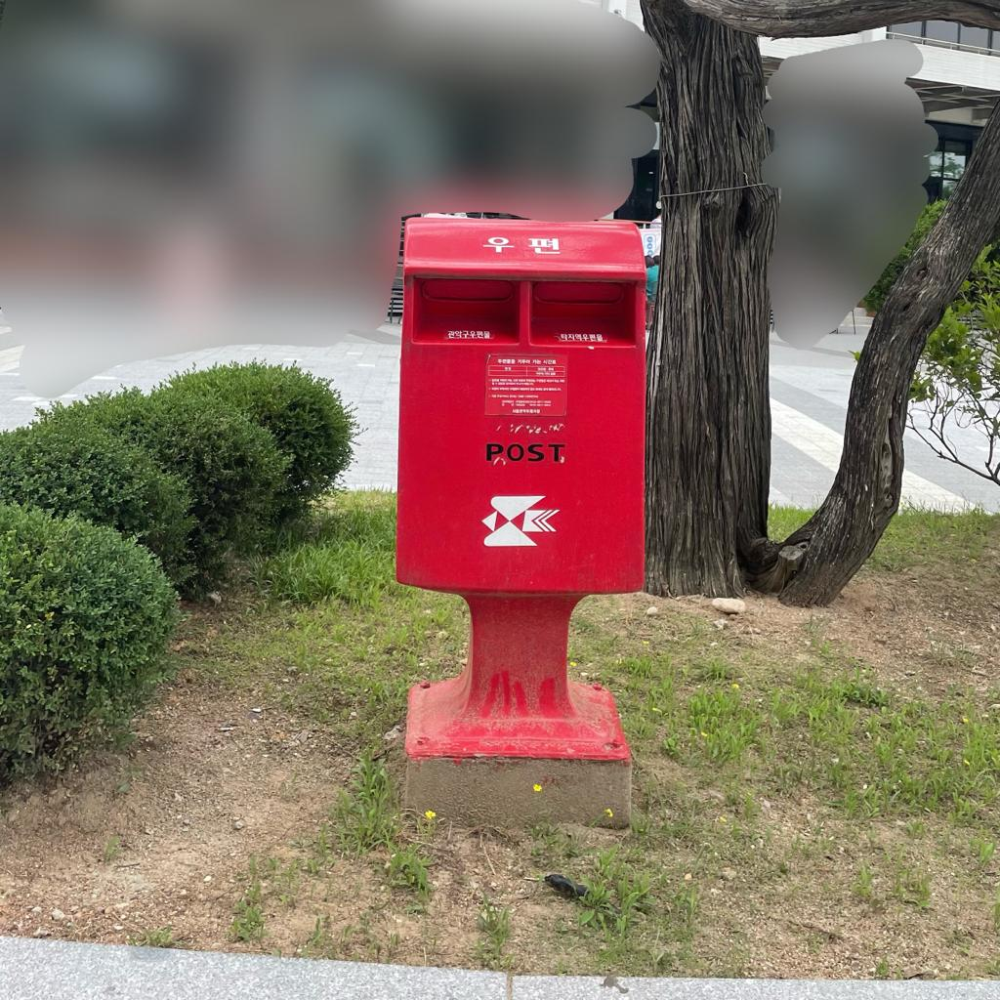
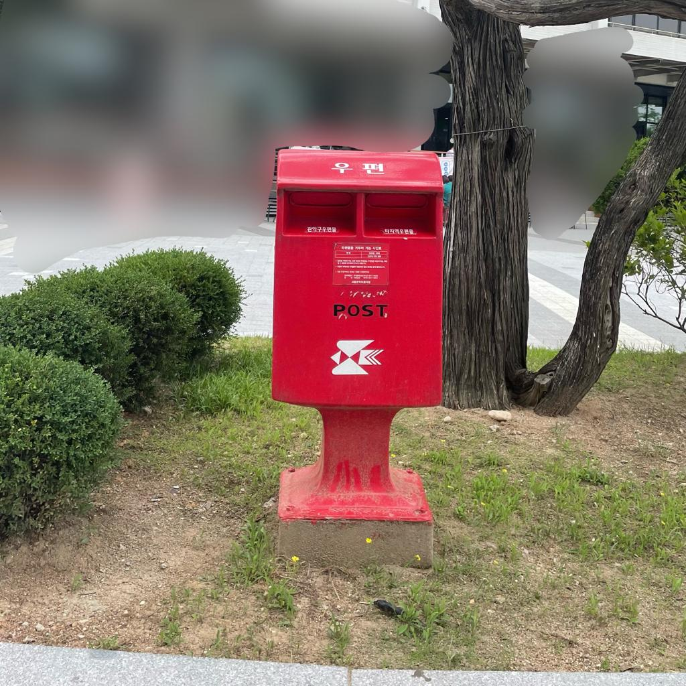
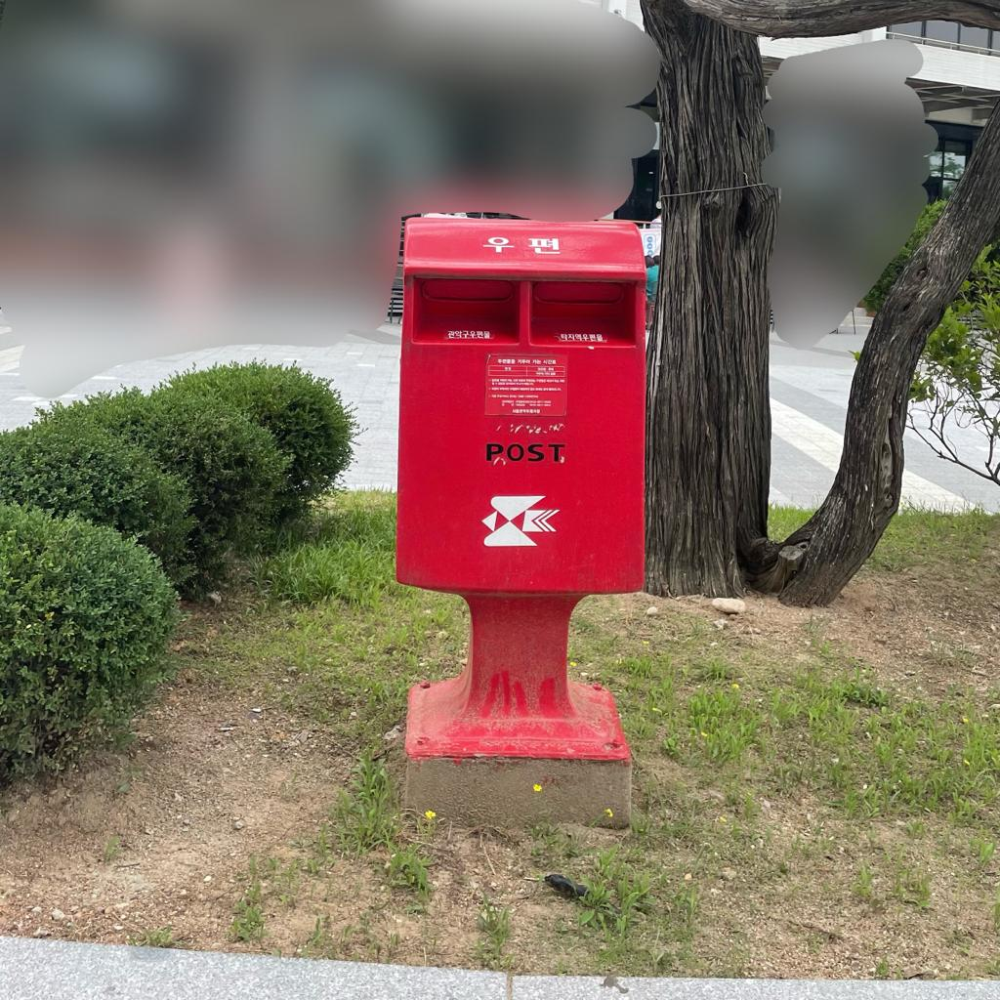

When : Postoffice Weekdays 09:00 - 12:00 and 13:00 - 18:00. The main cafeteria 08:00-9:30, 11:00-14:30, 17:00-19:00
Where : Between the Adminstative Building 60 and the Student center 63
What to bring : Optionally bring your Student ID card or alternativly download and login to the MySNU app. You need your id card or the QR code of the app to get cheeper meals.
What to do : The post office is on the shorter side of admin building 60, facing the student center. It's pretty neet because you can send postcards and letters for a cheap price. Even thick letters usually cost less than 1000 Won, which is even less than a Euro. You can also get fancy stamps to make your letter extra special. It's really convenient to send letters from there, but it takes about 2-3 weeks for them to arrive. On the other side, there's the student center. Inside, you'll find the main cafeteria that serves meals three times a day. They usually have three menus that you can check on the mysnu app. One of the meals costs just 1000 Won. You need to buy the ticket at a small window on the first floor, not from the machine. Usually, there's a rice cooker available if you need more rice. The student center also has a bookstore, a stationary store, and an SNU gift shop. In the stationary store, you can buy envelopes, pens, and notebooks. The gift shop has nice postcards and SNU merchandise. On the next floor, there are printers, but they usually only accept Korean bank cards. If you need medicine, there's a small pharmacy next to the printing machines.

Next Magic Word : The next magic word is what is the number written on the left side of the mailbox inside the circle Write the number all caps without dash or spacing (in english)
Next location: Building 14
Cafeteria Information : You can check which cafeterias exist besides the main cafeteria on this LINK. They also provide you with their opening hours etc. For the menu you can visit MENU. However the menu is in Korean, so you might want to get familiar with the korean food names haha.